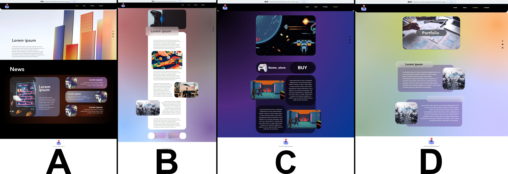
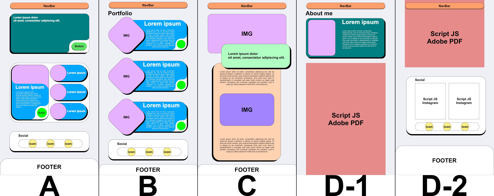
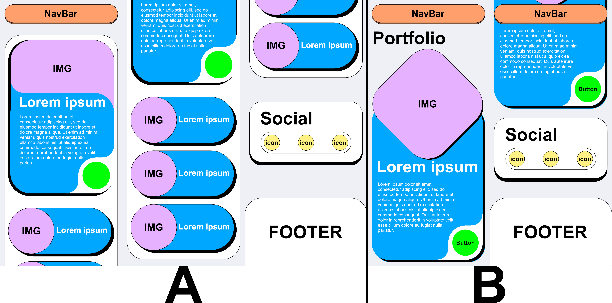
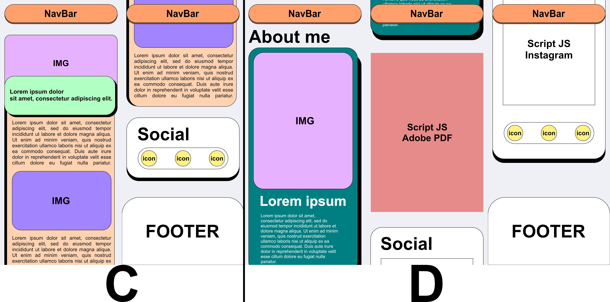

Il seguente lavoro è nato tramite il corso di Web Design, gestito dal docente all'accademia di belle arti di Roma, Enrico Bisenzi, che ho seguito in accademia come corso addizionale al mio piano di studi. Il corso puntava non solo alla realizzazione di un sito web, ma di andare oltre al layout e all'aspetto visivo, perché teneva in considerazione all'aspetto dell'accessibilità web e dell'ottimizzazione per avere un buon resoconto a livello SEO (ossia, il Search Engine Optimization, che aiuta i motori di ricerca a capire il contenuto all'interno del pagina web). Nel mio caso in particolare, la pagina non doveva essere un progetto fine a se stesso per un esame, doveva essere di più per il mio post studi in accademia. Nasce l'idea di essere un portfolio.
Primo prototipo.
Inizialmente, non si comprendeva bene lo scopo del sito, era troppo caotica il concept, visto che al suo interno erano presenti un misto di cose, tra l'essere un blog, un portfolio e al tempo stesso una specie di vetrina di vendita di ciò che avrei realizzato. Insomma, c'era troppa confusione nell'idea, che di conseguenza veniva riflessa nei prototipi.
Versione Desktop

Immagine B: Pagina delle oepre in vendita.
Immagine C: Pagina delle singole opere, progetti, lavori e news.
Immagine D: Pagina dell'elenco delle creazioni svolte.
Versione Desktop
(Test del concept tramite WIX)

Immagine B: Pagina dell'elenco delle creazioni svolte.
Immagine C: Pagina delle singole opere, progetti e lavori.
Immagine D: Pagina delle news.
Immagine E: Pagina delle oepre in vendita.
Secondo prototipo.
L'idea attuale, nasce dopo il mio abbandonato verso quell'ossessione di voler realizzare qualcosa di esageratamente di design, causato dal fatto di essermi stancato delle tonalità monocromatiche e oscure. Prendendo ispirazione dai fumetti più vecchi, decisi di adottare quel approccio di stile grafico, denominato "Dots Ben-Day". Il layout, di conseguenza, doveva essere simile a quello dei fumetti, dando vita al seguente prototipo:
Versione Desktop
Immagine B: Pagina dell'elenco delle creazioni svolte.
Immagine C: Pagina delle singole opere, progetti e lavori.
Immagine D-1: Prima porzione della pagina della bio e curriculum dell'autore del sito.
Immagine D-2: Secondo porzione della pagina della bio e curriculum dell'autore del sito.
Versione Mobile

Immagine B: Pagina dell'elenco delle creazioni svolte.
Immagine C: Pagina delle singole opere, progetti e lavori.
Immagine D: Prima della bio e curriculum dell'autore del sito.
Accesibilità
Per l'accessibilità, sono stati sfruttati tutti gli elementi che fornisce la semantica HTML5 di base, ma anche degli ARIA (Accessible Rich Internet Applications) per il corretto funzionamento degli screen reader e degli ALT per descrivere le immagini. Sul sito, infatti, non sono presenti DIV. Tutto il sito è realizzato puramente in HTML e CSS, senza JS (salvo solo per il funzionamento degli analytic). Inolte, è stato considerato anche la visibilità del sito, tramite la verifica se tra i colori c'era un contrasto sufficiente.

Immagine B: Comportamento di quando si passa sopra col mouse, il colore cambia da verde a giallo.
Immagine C: Comportamento di quando di clicca, anche se breve, il colore passa da giallo a rosso. Il rapido contrasto serve per evidenziare che si è compiuto un'azione effettiva.

Immagine B: Comportamento di quando ci si trova all'interno di un'opera, lavoro o progetto all'interno della pagina "Creazioni", per evidenziare che si, ci si trova nella categoria "creazioni" ma all'interno di un'entità a se stante autonoma.
Immagine B: Comportamento di quando si passa sopra col mouse, il colore cambia da verde a giallo.
Immagine C: Comportamento di quando di clicca, il colore giallo diventa piu oscuro.
Versione finale del sito.
Nasce cosi l'attuale pagina web che si sta attualmente visitando, una layout moderno, personale, colorato ed accessibile.

Immagine B: Pagina dell'elenco delle creazioni svolte.
Immagine C: Pagina delle singole opere, progetti e lavori.
Immagine D: Prima della bio e curriculum dell'autore del sito.